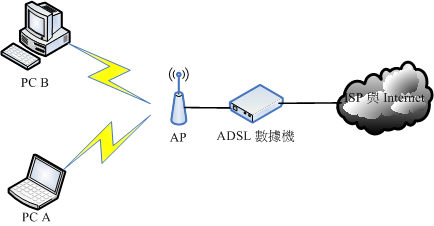
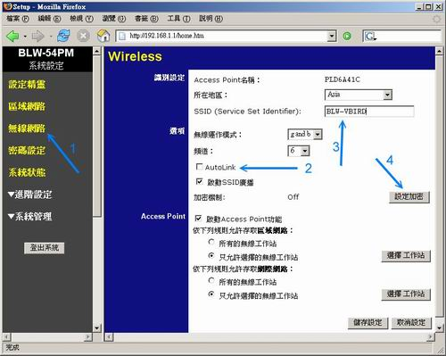
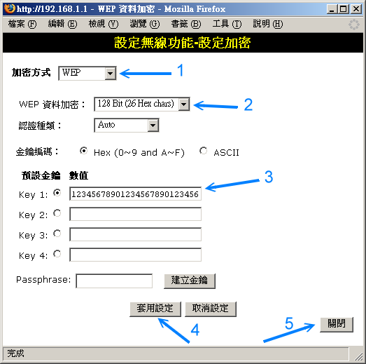
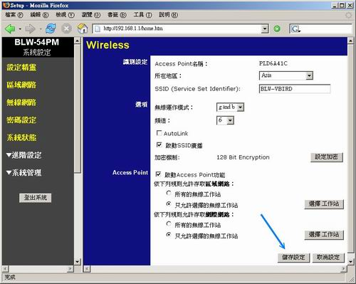

| |
最近升级日期：2006/07/24
本文已不再维护，升级文章请参考这里
|
呼呼！终於要来到修改 Linux 网络参数的章节了！在前面的 网络基础
章节内我们知道了主机要连上 Internet 需要一些正确的网络参数配置，这些配置在
Windows 系统上面的修改则在 区域网络的架构
里面进行了说明。在这一章当中，我们则主要以固定 IP 的配置方式来修改 Linux
的网络参数，同时，也会介绍如何使用 ADSL 的拨接方式来上网，此外，因为 Cable
modem 使用者也不在少数，所以我们也说明一下 Cable modem 在 Linux 下的配置方式喔！
最后，由於笔记本计算机使用者大增，由於笔记本计算机常使用无线网络，因此本文也加入了无线网络的连线介绍啊！
|
 Linux 连上 Internet 前的注意事项： Linux 连上 Internet 前的注意事项：
要连上 Internet 时，由前几章的数据来说，我们知道需要配置一组网络参数，
包括 IP, netmask, network, broadcast, gateway 以及 DNS 主机的 IP 等等，
那我们也知道，其实整个主机最重要的配置，就是『先要驱动网络卡』，否则主机连网络卡都捉不到时，
怎么配置 IP 参数都是没有用的，您说是吧！所以底下我们就来谈一谈，
您要如何确定网络卡已经被捉到，而 Linux 主机的网络参数又该如何配置？
Linux 的网络卡
在 Linux 里面的各项装置几乎都是以文件名称来取代的，例如 /dev/hda 代表 IDE1 介面的第一个 master 硬盘等等。
不过， 网络卡的代号 (Network Interface Card, NIC) 却是以模块对应装置名称来代替的，
而默认的网络卡代号为 eth0 ，第二张网络卡则为 eth1 ，以此类推。
我们知道网络卡其实是硬件，所以当然需要核心支持才能驱动他。
一般来说，目前新版的 Linux distributions 默认可以支持的网络卡芯片组数量已经很完备了，
包括大厂的 3COM, Intel 以及初阶的 RealTek, D-Link 等网络卡芯片都已经被支持，
所以使用者可以很轻易的配置好他们的网络卡。不过，万一您的网络卡芯片组开发商不愿意释出开放源
(Open Source) 的硬件驱动程序，或者是该网络卡太新了，使得 Linux 核心来不及支持时，
那么您就得要透过：
好让核心可以支持网络卡这块硬件啦！但是，重编核心或编译网络卡核心模块都不是简单的工作，
而且有时原始码又可能无法在每部主机上面编译成功，所以万一您的网络卡真的不被默认的 Linux
网络芯片所支持，那么鸟哥真的建议直接换一块被 Linux 支持的网络卡吧，例如很便宜的螃蟹卡！
免得花了太多时间在硬件确认上面，划不来的！ ^_^
如果您是照鸟哥推荐的，使用 RLT 8139 芯片 ( RealTek 8139 ) 的网络卡 ( 就是螃蟹卡 )
，那您应该在安装 Linux 的时候就已经捉到网络卡了，那真是恭喜您啦！
因为您的网络卡应该已经可以正常的工作罗！那如果在安装的时候并没有捉到网络卡呢？
该如何是好？那也不用担心，因为您也可以事后才安装网络卡的驱动程序呀！不过，因为
Linux 并不像 Windows 是那样的随插即用，所以需要动一些手术的！
另外，其实有的时候 Linux 的默认网络卡模块可能无法完全 100% 的发挥网络卡的功能的，
所以，有的时候您还是得必须要自行编译网络卡的模块才行喔！当然，
那个网络卡的模块就得要自行由网络卡开发商的官方网站下载了！不过，如果您的网络卡是自行编译安装的，
那么每次重新安装其他版本的核心时，您都必须要自行重新手动编译过该模块。
因为模块与核心是有相关性的啊！
好了，假设您的网络卡已经在主机上面，不论是内建的还是自行安插到 PCI 或 PCI-x 或 PCI-E 的介面上，
那么如何确认该网络卡有被核心捉到呢？很简单啊！就利用 dmesg 来查阅即可：
[root@linux ~]# dmesg | grep -in eth
117:divert: not allocating divert_blk for non-ethernet device lo
171:divert: allocating divert_blk for eth0
227:divert: not allocating divert_blk for non-ethernet device sit0
228:eth0: no IPv6 routers present
[root@linux ~]# dmesg | cat -n | less
#...前面省略...
169 3c59x: Donald Becker and others. www.scyld.com/network/vortex.html
170 0000:00:08.0: 3Com PCI 3c905C Tornado at 0xe800. Vers LK1.1.19
171 divert: allocating divert_blk for eth0
#...后面省略...
|
透过这个 dmesg 可以发现系统在启动时确实有捉到网络卡，然后透过搜寻行号，就能够找到该网络卡的驱动模块；
当然，您也可以透过 lspci 来查阅网络卡的相关模块呐！
另外，您也可以透过这个 dmesg 了解到该张网络卡的代号喔！举例来说，鸟哥上面这个信息就显示：
我的这张网络卡代号是 eth0
[root@linux ~]# lspci
00:08.0 Ethernet controller: 3Com Corporation 3c905C-TX/TX-M [Tornado] (rev 74)
|
看到了吧？鸟哥的某一部主机就是使用 3Com 的网络卡啊！Linux 系统本身就内建了 3c905C 这个驱动程序，
所以鸟哥根本不需要自行安装驱动程序呐！真是高兴！ ^_^
那么这个 3c905 的驱动程序放在哪里啊？就是核心模块啊！在这个地方：
[root@linux ~]# cd /lib/modules/`uname -r`/kernel/drivers/net
[root@linux net]# modinfo 3c59x.ko
filename: 3c59x.ko
author: Donald Becker <becker@scyld.com>
description: 3Com 3c59x/3c9xx ethernet driver LK1.1.19 10 Nov 2002
license: GPL
version: LK1.1.19 DBFD1C112761D573276AC45
parm: debug:3c59x debug level (0-6)
.....以下省略.....
|
你可以先以 lsmod 查询各个相关的模块后，再到这个地方来检查，或者是直接以上面这个目录下的文件，
配合 lsmod 所显示出来的各个模块名称相对应，以取得各个网络卡的模块名称说！这样了解吗？
OK 那你如何知道你的网络卡卡号呢？很简单啊！不管有没有启动你的网络卡，都可以使用：
『 ifconfig eth0 』来查询你的网卡卡号。
如果网络卡已经安装好了，那么请前往 固定 IP 上网方式去配置
ifcfg-eth0 这个文件 (如果是新增的网卡，这个文件可能不会存在喔！，需要自己创建)。
好了，万一你的网络卡无法被驱动，不过好在官方有提供相关的原始码时，
您就可以自行编译啦！
编译网络卡驱动程序
如果你买到的网络卡实在太新，导致 Linux 默认核心不支持，
或者您实在是很想要一些官方网站提供的驱动程序的新功能，
那实在就得要自行编译核心啦！
事实上，如果您要新添购硬件时，请先查阅一下硬件包装上面是否提及支持 Linux 的字样，
因为有些硬件厂商在推出新硬件时，常常会漏掉 Linux 驱动程序的撰写，
如果包装上面有提到支持的话，那么至少您会获得官方网站所提供的驱动程序原始码啊！ ^_^
鸟哥以我们实验室内一部 P-4 内建 Gigabit 以太网络卡的 CentOS Linux 系统来作介绍，
这部主机的内建以太网络使用的是 Marvell 的 88E8001 芯片，鸟哥到他们网站上面找到了一个 2006/04
释出的最新驱动程序来安装，该原始的文件名称为 install-8_40.tar.bz2 ，看到 .tar.bz2
就应该知道他是属於原始码，虽然鸟哥这部主机已经正确的捉到网络卡了，
不过，我们还是来升级一下让这个模块成为最新的驱动程序吧！ ^_^
另外，记得啊，要编译就得要有 gcc, make, kernel-devel 等套件才行喔！不要说你忘了！
赶紧回到 基础篇里面看看先！
假设您已经：
- 前往官方网站取得驱动程序的原始码了；
- 已经在您的系统上面安装了 gcc, make, kernel-devel 等套件；
那接下来的编译步骤是这样的：
- 解压缩与编译：
假设您下载下来的文件放置在 /root 内的话，那么使用 root 的身份进行如下工作吧：
[root@linux ~]# cd /usr/src
[root@linux src]# ln -s kernels/2.6.9-34.0.1.EL-smp-i686/ linux
[root@linux src]# cd ~
|
上面这个步骤很重要！因为驱动程序的模块都会需要找到核心的包含文件与相关函式库，
而一般来说， Linux kernel 2.6 以后的版本，则都会默认将核心原始码放在
/usr/src/kernels/(version) 这个目录内，但一般程序却是假设核心原始码在
/usr/src/linux，因此我们必须要先作个手术，将原始码与
/usr/src/linux 作个连结啊！请注意，那个原始码请依照您的核心版本与 Linux distribution 之公布为准。
[root@linux ~]# tar -jxvf install-8_40.tar.bz2
[root@linux ~]# cd DriverInstall
# 此时在该目录下有个 README 的文件，记得看一看，这个文件内会说明很多信息，
# 包括如何编译，以及这个模块所支持的芯片组哩！
[root@linux DriverInstall]# ./install.sh
|
这个模块写的比较人性化，因为他有给予一个可直接安装测试的 script，
所以我们可以直接运行这个命令即可，很单纯吧！ ^_^ 。不过记得，
这些动作请在主机前进行。因为这个 script 会主动的重新启动网络卡喔！
所以如果你是在网络上连线到此主机上面动作的话，嘿嘿！那可是会失败的！
这个命令会有很多的选项在里面，请依序选择：
- 1) installation
- y(install)
然后这个 script 便会主动的进行编译、模块卸除以及模块安装到
/lib/modules/`uname -r`/kernel/drivers/net 这个目录中，
并且尝试加载这个模块，以及启动网络卡喔！如果一切无误，您就会看到如下画面：
eth0: network connection up using port A
speed: 1000
autonegotiation: yes
duplex mode: full
flowctrl: symmetric
role: slave
irq moderation: disabled
scatter-gather: enabled
tx-checksum: enabled
rx-checksum: enabled
rx-polling: enabled
|
这样就算安装妥当罗！很简单吧！ ^_^
- 模块之测试与处理
事实上，刚刚我们那个模块其实已经主动的加载到我们的系统当中了，
不过，如果您所取得的原始码并没有附上这么一支人性化的 script 的话，那么您就得要自行进行底下的动作了。
[root@linux ~]# ls -l
drwxr-xr-x 2 root root 4096 Jul 20 11:57 sk98lin
[root@linux ~]# ls -l sk98lin
-rw-r--r-- 1 root root 2666344 Jul 20 11:57 sk98lin.ko
# 上面那个目录假设是我编译出来的模块，里面还会有一个文件喔！那个文件就是
# sk98lin.ko ，要注意，新的 2.6 版的核心模块扩展名都变成 .ko 的格式了！
[root@linux ~]# cp -a sk98lin /lib/modules/`uname -r`/kernel/drivers/net
# 注意啊！整个网络卡驱动模块就是放在上面的目录中，不要写错了。
[root@linux ~]# depmod -a
# 将所有的模块进行重新分析的工作！创建关连文件
[root@linux ~]# lsmod | grep 'sk98lin'
# 先确认『sk98lin』这个模块不存在，然后就可以开始测试：
[root@linux ~]# modprobe sk98lin
[root@linux ~]# lsmod | grep 'sk98lin'
# 如果有相关的字样跑出来时，就表示这个模块可以顺利的被加载啦！
|
如果可以顺利加载的话，恭喜您，您所自行编译的驱动程序已经搞定啦！
不过，当有新版本的核心释出时，您也安装了新版的核心，那么上面的动作您就得要再进行一次，
为什么呢？想一想，刚刚您将编译出来的驱动程序模块放在哪里？
然后编译的时候参考的核心原始码又是在哪里？那您就会晓得『为什么』了！ ^_^
- 配置启动自动启动网络卡模块
我们前面提到，Linux 的网络卡其实仅是一个代号，并不是类似硬盘的装置文件，所以，
我们必须要指定这个代号与模块的对应才行，在 CentOS (Red Hat 系统) 的对应是使用 /etc/modprobe.conf
，至於旧版的 2.4 核心中，则使用的是 /etc/modules.conf ，注意一下您的核心版本。
鸟哥的 CentOS 4.3 使用的是 /etc/modprobe.conf ，所以我就得这么做：
[root@linux ~]# vi /etc/modprobe.conf
# 修改或添加底下这一行吧！
alias eth0 sk98lin
[root@linux ~]# sync; reboot
|
为了测试一下刚刚的配置是否会生效，通常鸟哥都会尝试一次重新启动，
然后启动完成之后观察一下是否有正确的启动网络卡，并观察一下模块加载的情况，
如果一切都顺利，那就太完美了！
- 尝试配置 IP
等到一切就绪之后，总得试看看这样的网络卡模块是否可以顺利的配置好 IP 吧？
所以我们先手动给他一个私有 IP 看看先：
[root@linux ~]# ifconfig eth0 192.168.1.100
[root@linux ~]# ifconfig
eth0 Link encap:Ethernet HWaddr 00:01:BA:77:16:52
inet addr:192.168.1.100 Bcast:192.168.1.255 Mask:255.255.255.0
.....以下省略.....
|
嘿嘿！真的配置妥当哩！然后利用 ping 这个命令去 ping 一下网域内的其他计算机，
看看能不能有回应，就知道您的网络卡是否 OK 的啦！通常是没有问题的啦！
Linux 网络相关配置文件
要开始玩 Linux 网络之前， 请您务必了解 Linux
网络相关配置文件放置的目录与档名！这真的很重要！因为在 Linux 底下修改 IP
只要动到一个文件即可，修改主机名称也只要一个文件，所以只要将这些文件名称记起来，呵呵！
未来在进行网络的测试与修订时，真的会事半功倍～完全不需要什么 linuxconf, webmin 等额外工具的帮助，
真的很简单啦！底下赶紧来说一说与 Linux 网络最相关的几个文件档名与他的用途！
- /etc/sysconfig/network
这个文件主要的功能在於配置『主机名称( HOSTNAME )与启动 Network
与否』！一般来说，如果您变动过这个文件内的主机名称时，请务必重新启动 (reboot)，
因为这样才会让系统上面所有的程序都使用最新配置的主机名称喔！(
在 SuSEL 上面，主机名称是记录在 /etc/HOSTNAME 里面的！)
- /etc/sysconfig/network-scripts/ifcfg-eth0
这个文件的内容即是配置网络卡参数的文件啦！里面可以配置『network,
IP, netmask, broadcast, gateway, 启动时的 IP 取得方式( DHCP, static ),
是否在启动的时候启动』等等。至於 ifcfg-eth0 指的是第一块网络卡，而第二块网络卡为 ifcfg-eth1
以此类推。(在 SuSE 上面则是使用 /etc/sysconfig/network/ifcfg-eth0 )。
- /etc/modprobe.conf
如果硬件要能动作，当然要核心有支持才行！同时，我们也可以利用外挂的核心模块
(可以将他想成是驱动程序) 来驱动硬件，而启动时用来配置加载核心模块的文件就是 modprobe.conf
啦。一般来说，目前的 distributions 通常使用模块的方式来编译网络卡驱动程序，所以，
当您安装完毕后，您的网络卡与模块对应通常已经写到这个文件当中罗！
- /etc/resolv.conf
我们在网络基础里面稍微提到的 DNS 功能是什么？对啦，
就是进行主机名称与 IP 的对应！而 resolv.conf 就是配置 DNS IP (名称解析服务器) 的文件，
常常有人提到『咦！我已经可以 ping 到外部计算机的公共 IP 了，为何输入网址却无法连线？』
通常发生的错误就是这个文件里面的配置不正确啦！请注意！
通常这个文件可以输入中华电信的 DNS ( 168.95.1.1 )！
- /etc/hosts
这个文件可以记录计算机的 IP 对应主机的名称或者主机的别名！特别留意的是，
在区域网络内有些服务需要反查 Client 的身份，此时就会动用到主机名称对应 IP 的数据。
但是因为区域网络内使用私有保留 IP ，当然无法进行 Hostname 对应 IP 的行为，
这个时候该服务就会呆呆的等待 30~60 秒～如果可以避过这个反查，或者是直接告诉主机 Hostname 与
IP 的对应，那么就可以节省这个反查的时间了！所以，如此一来省去反查的时间，就可以改善 LAN
内的连线速度了！这个 hosts 就是用来配置 Hostname 对应 IP 的啦！
更多的信息请查阅后续服务器章节 DNS 服务器的介绍。
- /etc/services
这个文件则是记录架构在 TCP/IP 上面的总总协议，包括 http, ftp, ssh, telnet 等等服务所定义的 port
number ，都是这个文件所规划出来的。如果您想要自订一个新的协议与 port
的对应，就得要改这个文件了；
- /etc/protocols
这个文件则是在定义出 IP 封包协议的相关数据，包括 ICMP/TCP/UDP 这方面的封包协议的定义等。
大概知道上面这几个文件后，未来要修改网络参数时，那就太简单了！
至於网络方面的启动命令的话，可以记得几个简单的命令即可喔！
- /etc/init.d/network restart
这个 script 最重要！因为可以一口气重新启动整个网络的参数！
他会主动的去读取所有的网络配置档，所以可以很快的恢复系统默认的参数值。
- ifup eth0 (ifdown eth0)
启动或者是关闭某张网络介面。可以透过这个简单的 script 来处理喔！
这两个 script 会主动到 /etc/sysconfig/network-scripts/ 目录下，
读取适当的配置档来处理啊！ (例如 ifcfg-eth0)。
大概您只要只到这些基本的命令与文件，哈哈！网络参数的配置就太简单啦！
不过，最好您还是要了解 shell script
，比较好！因为可以追踪整个网络的配置条件。 why ？这是因为每个 distributions
的配置数据可能都不太相同，不过却都以 /etc/init.d/network 作为启动的 script ，
因此，您只要了解到该文件的内容，很容易就追踪得出来您的配置档所需要的内容呢！对吧！
连上 Internet 的方法：
在前一章 区域网络的简易配置里面，我们知道了连上 Internet
的方法有好多种，不过在现今的台湾，主要的连线方法其实是以
(1)学术网络、(2)ADSL 固接与拨接、(3)Cable modem 等方式为主，
此外，由於目前使用 Linux notebook 的使用者大增，而 Notebook 通常是以无线网络来连线的，
所以鸟哥在这里也尝试使用一款无线网络来进行连线配置。
至於传统的 56 Kbps 拨接则因为速度较慢且使用度越来越低，所以在这里就不多做介绍了。
另外请特别留意，底下的说明全部都是假设您的网络卡已经正常驱动的情况下，所以，
万一您的网络卡还是无法启动时，看是要(1)参考前面的说明重新编译一个模块，还是(2)早点放弃，
赶紧买张便宜的网络卡来安装与配置，那就完全依照您的需求啦！
固定 IP 上网方式
所谓的固定 IP 就是指在您的网络参数当中，你只要输入既定的 IP 参数即可。那么这个既定的 IP 来自哪里呢？
一般来说，他可能来自於：
- 学术网络：由学校单位直接给予的一组 IP 网络参数；
- 固定制 ADSL：向 ISP 申请的一组固定 IP 的网络参数；
- 企业内部或 IP 分享器内部的区域网络：例如企业内使用私有
IP 作为区域网络的连线之用时，
那么我们的 Linux 当然也就需要向企业的网管人员申请一组固定的 IP 网络参数罗！
这样清楚吗？也就是说，我们取得的固定 IP 参数并非一定是 public IP 喔！反正就是一组可接受的固定 IP 就是了！
所以在架设您的环境之前，请先注意所有网络参数的来源正确性啊！
好了，那么现在假设我的 Linux 主机需要的参数如下所示：
Hostname centos.dm.tsai
IP: 192.168.1.13
Netmask 255.255.255.0
Network 192.168.1.0
Broadcast 192.168.1.255
Gateway 192.168.1.2
DNS IP 168.95.1.1
|
底下我们就分别针对上面的各项配置来进行文件的重新修改罗！
- 修改主机名称： /etc/sysconfig/network
修改主机名称真的是很简单！直接在文件内修订即可！
[root@linux ~]# vi /etc/sysconfig/network
NETWORKING=yes
HOSTNAME=centos.dm.tsai
|
够简单吧！这样就将主机名称改好了！记得：如果您曾经更动过这个文件，
最好重新启动，以使所有的服务都可以使用到新主机名称。
- 配置网络参数： /etc/sysconfig/network-scripts/ifcfg-eth0
请记得，这个 ifcfg-eth0 与文件内的 DEVICE 名称配置需相同，并且，在这个文件内的所有配置，
基本上就是 bash 的变量配置守则啦！
[root@linux ~]# vi /etc/sysconfig/network-scripts/ifcfg-eth0
DEVICE=eth0 <== 网络卡代号，必须要 ifcfg-eth0 相对应
BOOTPROTO=static <== 启动协议，有 dhcp 及 static 这里是 static
BROADCAST=192.168.1.255 <== 就是广播位址罗
HWADDR=00:40:D0:13:C3:46 <== 就是网络卡位址
IPADDR=192.168.1.13 <== 就是 IP 啊
NETMASK=255.255.255.0 <== 就是子遮罩网络
NETWORK=192.168.1.0 <== 就是网域啊！该网段的第一个 IP
GATEWAY=192.168.1.2 <== 就是默认路由！
ONBOOT=yes <== 是否启动启动的意思
MTU=1500 <== 就是最大传输单元的配置值。
#GATEWAYDEV=eth0 <== 主要路由的装置为那个，通常不用配置
|
上面的数据很好理解吧！请注意每个变量(左边的英文)都应该要大写！
否则我们的 script 会误判！关於 IP 的四个参数 (IPADDR, NETMASK, NETWORK, BROADCAST) 鸟哥在这里就不再多说，
要谈的是几个重要的配置值：
- DEVICE：这个配置值后面接的装置代号需要与档名 (ifcfg-eth0)
那个装置代号相同才行！否则会显示找不到装置名称！
- BOOTPROTO：启动该网络介面时，使用何种协议？
如果是手动给予 IP 的环境，请输入 static 或 none ，如果是自动取得 IP 的时候，
请输入 dhcp (不要写错字！)
- GATEWAY：代表的是『整个主机系统的 default gateway』，
所以，配置这个项目时，请特别留意！不要有重复配置的情况发生喔！也就是当您有
ifcfg-eth0, ifcfg-eth1.... 等多个文件，只要在其中一个文件配置
GATEWAY 即可
- GATEWAYDEV：如果您不是使用固定的 IP 作为 Gateway ，
而是使用网络装置作为 Gateway (通常 Router 最常有这样的配置)，那也可以使用
GATEWAYDEV 来配置通讯闸装置呢！不过这个配置项目很少使用就是了！
- HWADDR：这个东西就是网络卡的卡号了！有啥用途呢？
记得以前我们常常在讲，如果有两块一模一样的网络卡存在时，例如在一部主机上面安装两张螃蟹卡，
由於是相同的芯片，所以在 /etc/modprobe.conf 内无法指定出明确的 eth0 与 eth1
的对应 (因为模块使用相同嘛！)，那么哪一张才是 eth0 ？呵呵！大家有福了！
利用 HWADDR 指定网络卡的卡号，就能够明白的定义出不同网卡的代号啦！很方便吧！
事实上，如果您想要了解每个变量的项目代表的意义时，建议可以参考 /sbin/ifup 这个 script 的内容，
这个 script 对於每个项目的应用都记录的挺清楚的！ ^_^
- 启动与关闭网卡：
启动与关闭的方式有两种，底下分别介绍：
[root@linux ~]# ifup eth0
[root@linux ~]# ifdown eth0
# 上面的作法是针对 eth0 来进行启动 (ifup) 与关闭 (ifdown) ；
[root@linux ~]# /etc/init.d/network restart
# 针对这部主机的所有网络介面 (包含 lo) 与通讯闸进行重新启动，
# 所以网络会停顿再开喔！
|
就样就能够启动网络卡了！再来赶紧测试观察看看，我们可以直接下达 ifconfig 以及使用
ping 来检查看看喔！
[root@linux ~]# ifconfig eth0
eth0 Link encap:Ethernet HWaddr 00:40:D0:13:C3:46
inet addr:192.168.1.13 Bcast:192.168.1.255 Mask:255.255.255.0
inet6 addr: fe80::240:d0ff:fe13:c346/64 Scope:Link
UP BROADCAST RUNNING MULTICAST MTU:1500 Metric:1
RX packets:229458 errors:16 dropped:0 overruns:0 frame:0
TX packets:117415 errors:0 dropped:0 overruns:0 carrier:0
collisions:0 txqueuelen:1000
RX bytes:345006035 (329.0 MiB) TX bytes:7177543 (6.8 MiB)
Interrupt:5 Base address:0x3e00
# 记得啊！有出现上头那个 IP 的数据才是正确的启动；
# 另外，也注意一下那个 MTU 的数值呐！ ^_^
[root@linux ~]# ping -c 3 192.168.1.2
PING 192.168.1.2 (192.168.1.2) 56(84) bytes of data.
64 bytes from 192.168.1.2: icmp_seq=0 ttl=64 time=0.216 ms
64 bytes from 192.168.1.2: icmp_seq=1 ttl=64 time=0.227 ms
64 bytes from 192.168.1.2: icmp_seq=2 ttl=64 time=0.222 ms
--- 192.168.1.2 ping statistics ---
3 packets transmitted, 3 received, 0% packet loss, time 2000ms
rtt min/avg/max/mdev = 0.216/0.221/0.227/0.017 ms, pipe 2
# 注意啊！有出现 ttl 才是正确的回应！如果出现『 Destination Host Unreachable 』
# 表示没有成功的连线到您的 GATEWAY 那表示出问题啦！赶紧检查有无配置错误。
|
一般来说，到此为止您的 IP 配置已经成功啦！不过，偶而您会发现无法找到 yahoo.com.tw 的 IP 那！
那表示您必须要进行底下的工作！
- 配置 DNS 的 IP： /etc/resolv.conf
这个文件重要啦！他会影响到您是否可以查询到主机名称与 IP 的对应喔！
通常如下的配置就 OK 了！
[root@linux ~]# vi /etc/resolv.conf
nameserver 168.95.1.1
nameserver 139.175.10.20
|
我们以中华电信与 SeedNet 在南部的 DNS 主机之 IP 作为配置的方式！
请注意一下，如果您不知道您的最接近的 DNS 主机的 IP ，那么直接输入 nameserver 168.95.1.1
这个中华电信的 DNS 主机即可！不过如果您公司内部有配置防止 DNS 的要求封包的防火墙守则时，
那么您就得要请教贵公司的网管单位告知您的 DNS IP 配置啦！然后赶紧测试看看：
[root@linux ~]# nslookup tw.yahoo.com
Server: 168.95.1.1
Address: 168.95.1.1#53
Non-authoritative answer:
tw.yahoo.com canonical name = tw.yahoo-ap1.akadns.net.
Name: tw.yahoo-ap1.akadns.net
Address: 202.43.195.52
|
仔细观察，得要出现有 IP 的字样，才算是配置成功喔！
上面这几个步骤需要一步一步来，如果前面失败，后面就不可能成功的！
所以请不要尚未启动网络前，就使用 nslookup 去追查 IP ，那是『查不到的』啦！
注意流程啊！得要网络好了，才能够处理其他在网络上面的 DNS 数据，您说是吧！ ^_^
可自动取得 IP 的环境
可自动取得 IP 的环境是怎么回事啊？不是很简单吗？当您在 IP 分享器后头的主机在配置时，
不是都会选择『自动取得 IP 』吗？那就是可自动取得 IP 的环境啦！那么这个自动取得是怎么回事啊？
也不难了解啦，其实就是『有一部主机提供 DHCP 服务给整个网域内的计算机』就是了！
例如 IP 分享器就可能是一部 DHCP 主机。那么 DHCP 是啥？
他是：Dynamic Host Configuration Protocol 的简写，顾名思义，
他可以『动态的调整主机的网络参数』的意思。详细的
DHCP 功能我们会在后面的章节说明的。
好了，那么这个方法适合哪些连线的方式呢？大致有这些：
- Cable Modem：就是使用电视缆线进行网络回路连线的方式啊！
这个方式属於媒体共享式，在社区内比较常见；
- ADSL 多 IP 的 DHCP 制：就鸟哥所知， SeedNet 有推出一种专案，
可以让 ADSL 用户以 DHCP 的方式来自动取得 IP ，不需要拨接。那使用的也是这种方法！
- IP 分享器或 NAT 有架设 DHCP 服务时：当您的主机位於 IP
分享器的后端，或者是您的 LAN 当中有 NAT 主机且 NAT 主机有架设 DHCP 服务时，
那取得 IP 的方法也是这样喔！
反正可以自动取得 IP 的条件下，大多数都是使用底下的方法啦！
请先参考前一小节 固定 IP 的连线方法配置好步骤 1~4 的所有项目，
其中第2个步骤需要改成底下的样子：
[root@linux ~]# vi /etc/sysconfig/network-scripts/ifcfg-eth0
DEVICE=eth0
ONBOOT=yes
BOOTPROTO=dhcp
|
没盖你喔！只要这三个项目即可，其他的都给他注解 (#) 掉！避免互相干扰！然后给他重新启动网络：
[root@linux ~]# /etc/init.d/network restart
|
我们区域网络内的 IP 分享器或 DHCP 主机，就会立刻帮您的 Linux 主机做好网络参数的规划，
包括 IP 参数与 GATEWAY 等，就通通配置妥当啦！很方便也很简单吧！
Tips:
有些版本会主动的修改 /etc/resolv.conf 这个文件，所以您必须要随时注意一下这个文件的内容，
另外， CentOS 会主动的创建一个说明文件数据在 /etc/dhclient-eth0.conf ，您也可以自行瞧一瞧去！
|  |
ADSL 拨接上网
终於来到台湾最热门的 ADSL 拨接上网的介绍啦！来谈一谈如何在 Linux 上拨接上网吧！
要拨接上网时，可以使用 rp-pppoe 这套软件来帮忙，所以，您必须要确认你的 Linux distributions
上面已经存在这个玩意儿了！(注： SuSE 使用的是其他的软件，您应该要自行使用 yast 来配置即可。)
CentOS 本身就含有 rp-pppoe ，请使用原版光盘，或者是使用 yum 来进行安装吧！
[root@linux ~]# rpm -q rp-pppoe
rp-pppoe-3.5-22 <==您瞧瞧！确实有安装喔！
|
当然，很多 distributions 都已经将拨接这个动作归类到图形介面里面去了，
所以可能没有提供 rp-pppoe 这个咚咚，没关系，您可以到底下的网站去取得的：
然后再自行手动安装即可。如何安装的过程鸟哥在这里就不谈了，请自行前往基础篇的 原始码与 Tarball查阅相关数据吧。
另外请注意，虽然整个连线是由主机的以太网络卡连接到 ADSL 调制解调器上，然后再透过电话线路连线到
ISP 的机房去，最后在主机上以 rp-pppoe 拨接达成连线。但是 rp-pppoe
使用的是 Point to Point (ppp) 的点对点协议所产生的网络介面，因此当您顺利的拨接成功之后，
会多产生一个实体网络介面『 ppp0 』喔！
而由於 ppp0 是架构在以太网络上的，所以 eth0 也不能关掉啊！注意注意！因此，拨接成功后就会有：
- 内部回圈测试用的lo介面；
- 网络卡 eth0 这个介面；
- 拨接之后产生的经由 ISP 对外连接的 ppp0 介面。
上头这三个介面是完全独立的，互不相干，所以关於 eth0 您可以这样思考：
- 这张网络卡 (假设是 eth0) 有接内部网络(LAN)：
如果是这样的话，那么您的 IP 配置参数： /etc/sysconfig/network-scripts/ifcfg-eth0 应该要给予一个私有
IP 以使内部的 LAN 也可以透过 eth0 来进行连线啊！所以我会这样配置：
[root@linux ~]# vi /etc/sysconfig/network-scripts/ifcfg-eth0
DEVICE=eth0
BOOTPROTO=static
BROADCAST=192.168.1.255
IPADDR=192.168.1.13
NETMASK=255.255.255.0
NETWORK=192.168.1.0
ONBOOT=yes
|
并请记得一件事情，那就是：『千万不要有 GATEWAY 的配置！』，
否则 ppp0 拨接成功后又会产生另一个 default gateway ，就会造成问题了！
- 没有内部网域：
如果这部 Linux 主机是直接连接到 ADSL 上头，并没有任何内部主机与其连线，
也就是说，您的 eth0 有没有 IP 都没有关系时，那么上面的配置当中的那个『 ONBOOT=yes 』
直接改成『 ONBOOT=no 』就好了！
至於其他的文件请参考前两小节 固定 IP 的连线方法上面的步骤1, 3, 4
配置好！步骤 2 则依照刚刚提到的是否有接 LAN 的情况来配置，然后就可以开始准备拨接了！
当然啦，拨接之前，请确认您的 ADSL 调制解调器 (小乌龟) 已经与主机连线妥当，
也取得帐号与口令，也安装好了 rp-pppoe ，然后就来处理吧！
- 关闭接在 ADSL 调制解调器上面的那张网卡
说实在的，鸟哥比较建议将内外网域分的清清楚楚比较好，所以，通常我都是主机上面接两块网络卡，
一张对内一张对外，对外的那张网卡在拨接前先关闭，虽然没有关闭也不打紧，
不过曾有网友回报，如果不关闭时，有时候(机率很低)会无法拨接成功！假设连接到 ADSL
的网卡是 eth0 ，那么关闭很简单吧？
[root@linux ~]# ifdown eth0
[root@linux ~]# ifconfig eth0 down
|
这样就可以啦！
- 配置帐号与口令之连线配置
假设 rp-pppoe 配置好了，如果您的版本没有 rp-pppoe 的话，请自行安装。
关於安装的方法可以参考本章最后的参考数据。然后就开始如下的配置：
[root@linux ~]# adsl-setup
Welcome to the ADSL client setup. First, I will run some checks on
your system to make sure the PPPoE client is installed properly...
LOGIN NAME
Enter your Login Name (default root): T1234567
# 注意啊！这个帐号名称是 ISP 给的，其中如果是 SeedNet ，输入如上，
# 如果是 Hinet 的话，就得要输入 username@hinet.com.tw ，后面的主机名也要写。
INTERFACE
Enter the Ethernet interface connected to the ADSL modem
For Solaris, this is likely to be something like /dev/hme0.
For Linux, it will be ethX, where 'X' is a number.
(default eth0): eth0
# 就是连接到 ADSL 调制解调器的那张网卡代号
Do you want the link to come up on demand, or stay up continuously?
If you want it to come up on demand, enter the idle time in seconds
after which the link should be dropped. If you want the link to
stay up permanently, enter 'no' (two letters, lower-case.)
NOTE: Demand-activated links do not interact well with dynamic IP
addresses. You may have some problems with demand-activated links.
Enter the demand value (default no): <==这里按 Enter 确定不要即可
DNS
Enter the DNS information here: 168.95.1.1
Enter the secondary DNS server address here: 139.175.10.20
# 这两个配置会影响 /etc/resolv.conf 的内容喔！
PASSWORD
Please enter your Password: <==这里则是输入您 ISP 给的口令
Please re-enter your Password: <==再一次口令
USERCTRL
Please enter 'yes' (two letters, lower-case.) if you want to allow
normal user to start or stop DSL connection (default yes): no
# 不让使用者可以启动或关闭 ADSL 的配置比较好吧！
The firewall choices are:
0 - NONE: This script will not set any firewall rules. You are responsible
for ensuring the security of your machine. You are STRONGLY
recommended to use some kind of firewall rules.
1 - STANDALONE: Appropriate for a basic stand-alone web-surfing workstation
2 - MASQUERADE: Appropriate for a machine acting as an Internet gateway
for a LAN
Choose a type of firewall (0-2): 0
# 先不要口令！后面我们会使用 Linux 本机的防火墙！
Start this connection at boot time
Do you want to start this connection at boot time?
Please enter no or yes (default no):yes
# 是否要启动的时候就拨接？
Ethernet Interface: eth0
User name: T1234567
Activate-on-demand: No
Primary DNS: 168.95.1.1
Secondary DNS: 139.175.10.20
Firewalling: NONE
User Control: no
Accept these settings and adjust configuration files (y/n)? y
# 如果没有问题就按下 y 开始写入配置档吧！
Adjusting /etc/sysconfig/network-scripts/ifcfg-ppp0
Adjusting /etc/resolv.conf
(But first backing it up to /etc/resolv.conf.bak)
Adjusting /etc/ppp/chap-secrets and /etc/ppp/pap-secrets
(But first backing it up to /etc/ppp/chap-secrets.bak)
(But first backing it up to /etc/ppp/pap-secrets.bak)
# 上面的文件很简单吧！
# ifcfg-ppp0 ：亦即是 ppp0 这个网络介面的配置文件；
# resolv.conf ：这个文件会被备份后，然后以刚刚我们上面输入的数据取代；
# pap-secrets, chap-secrets：我们输入的口令就放在这里！
|
哈哈！这样配置就成功啦！很简单吧！唯一需要注意的是在上面的 username 那个地方，千万注意，
因为 hinet 与 seednet 的配置是不一样的！千万小心呢！否则会无法连上线呦！此外，
由於我们在未来还会有 firewall 的建置，所以这里不太需要使用到防火墙啦！否则也可能无法连上
Internet 呦！另外，注意一下，我们上面使用 adsl-setup 的配置，其实最主要是修改两个文件，
分别是 /etc/ppp/pppoe.conf 这个主要配置档，以及
/etc/ppp/chap-secrets 这个口令储存档！
仔细去察看一下 chap-secrets 这个文件的内容，您就可以知道您的口令是否输入错误了！ ^_^
- 开始拨接上网
拨接很简单啊！
[root@linux ~]# adsl-start
....Connect!
|
这样就是显示连上 Internet 啦！通常比较容易出问题的地方在於硬件的连线情况，
请先确认所有的硬件连线没有问题喔！通常，如果您使用小乌龟 (ATU-R) 时，
请使用跳线连接网络卡与 ATU-R。另外一个容易出错的地方在於输入的帐号与口令，
帐号与口令都是您的 ISP 给您的，并且注意大小写(可以到 /etc/ppp/chap-secrets 察看一下是否配置错误？)
- 察看 IP 啦！
直接使用 ifconfig ppp0 看看能否得到您的 IP 呢？没错！那就是啦！ ^_^
[root@linux ~]# ifconfig ppp0
ppp0 Link encap:Point-to-Point Protocol
inet addr:211.74.249.38 P-t-P:172.16.11.8 Mask:255.255.255.255
UP POINTOPOINT RUNNING NOARP MULTICAST MTU:1492 Metric:1
RX packets:8356088 errors:0 dropped:0 overruns:0 frame:0
TX packets:8532063 errors:0 dropped:0 overruns:0 carrier:0
collisions:0 txqueuelen:10
|
- 特殊状况：
或许您会发现使用 rp-pppoe 拨接之后，您的 /var/log/messages 老是出现这样的信息：
[root@linux ~]# more /var/log/messages
May 10 18:02:22 testing pppoe[8527]: Bogus PPPoE length field (50)
|
这是什么问题啊？在 RP-PPPOE 的官方讨论区上面提过，这个问题是由於 ISP 提供的信息长度超过
rp-pppoe 默认的检查长度才会发生的一个警告信息，事实上这个信息并不重要，不用理会他也没有关系，
不会影响到 Internet 的运行。但是，这样的信息在 /var/log/messages 里面每一分钟就出现一次，
实在很讨厌！怎么办，可以将他拿掉吗？！当然可以！您可以下载新的 Tarball 来重新编译过！
详细的步骤是这样的：
步骤一：下载新的 tarball (鸟哥这里以 3.5 版为例)：
到底下的网站下载新的版本：
http://www.roaringpenguin.com/pppoe/#download
步骤二：在 /usr/local/src 底下解开文件，则造成
/usr/local/src/rp-pppoe-3.5/ 目录
步骤三：到 /usr/local/src/rp-pppoe-3.5/src 底下去，修改这四个文件：
* discovery.c
* pppoe.c
* pppoe-server.c
* relay.c
找到这四个文件内容如下代码：
/* Check length */
if (ntohs(packet.length) + HDR_SIZE > len) {
syslog(LOG_ERR, "Bogus PPPoE length field (%u)",
(unsigned int) ntohs(packet.length));
return;
}
|
将他修改成为如下：
/* Check length */
if (ntohs(packet.length) + HDR_SIZE > len) {
/* syslog(LOG_ERR, "Bogus PPPoE length field (%u)",
(unsigned int) ntohs(packet.length)); */
return;
}
|
请注意，上面每个文件都有多个同样的字串，请依序一个一个都修改掉才行！还没完喔！再到 pppoe.c 找到底下的字眼：
if (plen + HDR_SIZE > len) {
syslog(LOG_ERR, "Bogus length field in session packet %d (%d)",
(int) plen, (int) len);
return;
}
|
请将他改成：
if (plen + HDR_SIZE > len) {
/* syslog(LOG_ERR, "Bogus length field in session packet %d (%d)",
(int) plen, (int) len); */
return;
}
|
步骤四：然后开始编译与安装吧！
[root@linux ~]# cd /usr/local/src/rp-pppoe-3.5/src
[root@linux src]# ./configure
[root@linux src]# make
[root@linux src]# make install
|
当然，您得先移除 rp-pppoe 才行喔！ ^_^
步骤五：利用 adsl-setup ,adsl-start 再重新配置与启动看看吧！
很快的，这样您就已经做好 ADSL 拨接上网的动作了！很快乐吧！
但是不要忘记了，现在您的主机可是没有任何防备的喔！所以，赶紧往下两节读一读去啊！ ^_^
无线网络--以笔记本计算机为例
除了使用实体 RJ-45 线路来连接主机之外，由於现在笔记本计算机渐渐广为使用，
因此在笔记本计算机上面的无线网络 (Wireless) 也越来越重要罗～针对无线网络所提出的标准中，
以 IEEE 802.11b 及 802.11g 较为重要，其中 802.11g 这个标准的传输速度已经可以达到 54Mbps 的水准，
等於是快速以太网络 (fast ethernet, 10/100 Mbps) 的一半了，比起以前的 11Mbps (802.11b)
要快的多！所以也渐渐的成为移动式装置之一的笔记本计算机常用的网络连线方式之一。
无线网络所需要的硬件
我们知道在 RJ-45 的以太网络环境中，以 switch/hub 以及网络卡与网络线最重要，
该架构中主要以 switch/hub 串接所有的网络设备。那么在无线网络中，当然也需要一个接收讯号的装置，
那就是无线基地台 (Wireless Access Point, 简称 AP) 了！
另一个装置当然就是安装在计算机主机上面的无线网卡罗！
其实无线基地台本身就是个 IP 分享器了，他本身会有两个介面，一个可以与外部的 IP 做沟通，
另外一个则是作为 LAN 内部其他主机的 GATEWAY 罗！那其他主机上面只要安装了无线网卡，
并且顺利的连上 AP 后，自然就可以透过 AP (以 AP 为路由器) 来连上 Internet 啦！
整个传输的情况可以用下图来示意：

图一、无线网络的连线图示
在上图中，我们假设 PC A 与 PC B 这两部主机都有安装无线网卡，因此他们可以扫瞄到区域网络内的 AP
存在，所以可以透过这个 AP 来连上 Internet 啊。在不考虑内部 LAN 连线的情况下，
AP 如何连上 Internet 呢？虽然每部 AP 的控制介面都不相同，不过绝大部分的 AP
都是提供 Web 介面来配置的，因此您可以参考每部 AP 的说明书来进行配置，
在这里鸟哥就不多说了。
鸟哥底下将会以一般家庭常用的小型 AP 与无线网卡来说明一个案例，
鸟哥手边有的笔记本计算机是旧式的 MiTac 内有赛扬 366 CPU 及 192 MB 的内存，
U盘 版本为 1.1 ，够旧了吧！所以鸟哥额外加了扩充卡 (PCMCIA) 让 U盘 提升到 2.0 版，
选择的 AP 为 PCi 这家公司制造的 BLW-54PM 无线基地台，
而无线网卡则是使用 U盘 2.0 介面的 PCi 公司制造的 GW-US54Mini ，
会选择这个装置主要是因为 PCi 这一款无线网卡装置有支持 Linux 系统，
所以很容易被 Linux 捉到，较容易安装使用啦！ ^_^
网络安全方面
如果您留心一下上面的图一，那么就可以发现一件事情，那就是：『 如果
AP 不配置任何连线限制，那任何拥有无线网卡的主机都可以透过这个 AP 连接上您的 LAN 』，
要知道，通常我们都会认为 LAN 是信任网域，所以内部是没有防火墙的，
亦即是不设防的状态，呵呵！如果刚好有人拿著笔记本计算机经过您的 AP 可
以接收讯号的范围，那么他就可以轻易的透过您的 AP
连接上你的 LAN ，并且可以透过你的 AP 连上 Internet ，如果他刚好是个喜欢搞破坏的 cracker ，
哈哈！那么当他使用您的 AP 去攻击别人时，最后被发现的跳板是谁？？当然是您的 AP！
那是谁会吃上官司？够清楚了吧？而且您内部主机的数据也很有可能被窃取啊！
所以啦，『 无线网络的安全性一定是具有很大的漏洞的』，
没办法，因为无线网络的传输并不是透过实体的网络线，而是透过无线讯号，实体网络线很好控制，
无线讯号您如何侦测啊？对吧！因此，请您务必在您的 AP 上面进行好连线的限制配置，
一般可以这样做限制的：
- 在 AP 上面使用网卡卡号 (MAC) 来作为是否可以存取 AP 的限制：
如此一来，就只有你允许的网络卡才能够存取你的 AP ，当然会安全不少。不过这个方法有个问题，
那就是当有其他主机想要透过这个 AP 连线时，你就得要手动的登陆 AP 去进行 MAC 的配置，
在经常有变动性装置的环境中 (例如公司行号)，这个方法比较麻烦～
- 配置你的 AP 连线加密机制与金钥：
另一个比较可行的办法就是配置连线时所需要的验证金钥！
这个金钥不但可以在网络连线的数据当中加密，使得即使您的数据被窃听，
对方也是仅能得到一堆乱码，同时由於 client 端也需要知道金钥并且在连线阶段输入金钥，
因此也可以被用来限制可连线的用户啊！
当然，上面两种方法您可以同时配置，亦即不但需要连线的金钥，而且在 AP 处也配置能够存取的 MAC 网卡，
嘿嘿！这样一来，就更安全的多了！更多的 AP 安全方面的概念，可以参考底下这一篇文章的介绍：
关於 ESSID/SSID ：
想一想，如果您有两部 AP 在同一个区域网络内，那么请问一下，
当你的无线网卡在上网时，他会透过哪一个 AP 连线出去呢？很困扰，对吧！
其实每部 AP 都会有一个连线的名字，那就是 ESSID ，这个 ESSID 可以提供给 client 端，
当 client 端需要进行无线连线时，他必须要说明他要利用哪一部 AP ，那个
ESSID 就是那时需要输入的数据了！在鸟哥的案例当中，我将我的 AP 配置为 BLW-VBIRD 这个名字，
并且给予一个金钥口令，配置的方法如同下图所示：

图二、无线网络 AP 的金钥配置项目
如上图，在登陆了 AP 的配置项目后，依序 (1)先选择无线网络，然后在右边的窗口当中
(2)取消 AutoLink 的配置，然后 (3)输入您的 SSID 识别码 (就是 ESSID)，最后再进入
(4)口令配置的项目罗！在按下『配置加密』之后，他就会出现如下的画面：

图三、无线网络 AP 的金钥配置项目
我们先选择 (1)加密的方式，在这里可以选择简单的 WEP 加密方式即可，然后
(2)输入加密的金钥长度，选择最长的吧！这个长度需要输入 26 个字节呐！之后当然就得
(3)输入 26 个口令 (金钥) 罗～在这里鸟哥随便先填一个，您可别真的跟鸟哥填一样的口令啊！
填完之后就 (4)按下套用配置，最后才 (5)关闭，关闭回到前一个画面后，
给他按下『储存配置』，如下图所示：

图四、无线网络 AP 的金钥配置项目
这个时候在画面当中的『加密机制』才会正式的启动啊！这个时候我们就会有底下两个数据：
- ESSID 为 BLW-VBIRD
- KEY 为 12345678901234567890123456
这两个数据很重要喔！我们底下会仔细的来说明啊！
开始连线
OK！底下我们就来谈一谈，那么您的笔记本计算机如何透过无线网络实际的上线呢？
首先当然就是需要安装驱动程序啦！再来则是需要让网卡代号与模块对上关系，
然后配置了网络卡配置档后，才能够连上 Internet 啦！底下我们就一个一个步骤来说明吧！
- 取得驱动程序并实际安装：
鸟哥在这个案例当中使用的 U盘 无线网卡的驱动程序，并没有在 CentOS 的默认核心内支持，
所以我必须要自行安装他的驱动程序才行！先来察看一下我们的主机是否有捉到这个 U盘 的硬件装置呢？
[root@linux ~]# dmesg | grep usb
usb 4-1: new high speed U盘 device using address 2
# 这里是说，有个高速 U盘 装置使用第二个 U盘 位址的意思。
# 既然知道这个位址，我们来查一查这个装置的内容吧！
[root@linux ~]# cat /proc/bus/usb/devices
T: Bus=04 Lev=01 Prnt=01 Port=00 Cnt=01 Dev#= 2 Spd=480 MxCh= 0
D: Ver= 2.00 Cls=ff(vend.) Sub=ff Prot=ff MxPS=64 #Cfgs= 1
P: Vendor=14ea ProdID=ab13 Rev=43.30
S: Manufacturer=PCI
S: Product=U盘2.0 WLAN
.....后面省略.....
# 比较重要的就是上面的那个装置码以及厂商与产品代码了！
# 先给他抄写下来，因为等一下我们进行模块编译时会用到！
|
呵呵！真的有捉到！那么就得要实际的来进行驱动程序的安装罗！
这个驱动程序的下载可以前往他的官方网站：
http://www.planex.com.tw/download/wireless/gw-us54mini.htm 来下载，
鸟哥下载的是 zd1211 的驱动程序，版本是 V1.2.0.0 ，这个版本在编译时，
似乎还是没有做得很好，所以我们依旧得要进行一些小手术来修订才行喔！
假设您将下载的 tarball 解压缩到 /root/zd1211 文件当中了，那么如何编译呢？
[root@linux ~]# cd zd1211
# 这个目录下有个 README 的文件，请记得好好查阅一下喔！
[root@linux zd1211]# cd zdsta
[root@linux zdsta]# vi Makefile
# 先修改底下这一行，应该是在第 15 行的地方，这里需要与你的核心对应喔！
# 我这里是使用 CentOS 4.3 并且升级过核心作为范例的！
KERNEL_SOURCE=/lib/modules/2.6.9-34.0.2.EL/build
[root@linux zdsta]# vi src/zdusb.h
# 很奇怪，我的 CentOS 4.3 不支持太长的型号名称，所以需要做个修改，
# 大约在第 16 行的地方，找到下列的字：
#define PRODUCT_GW-US54MINI 0xAB13
# 将他改成下列的模样：
#define PRODUCT_US54MINI 0xAB13
# 顺便仔细看一下第 15, 16 行，有没有发现版本与型号最右侧，
# 与我们刚刚使用 cat /proc/bus/usb/devices 的内容相同啊！ ^_^
[root@linux zdsta]# vi src/zdusb.c
# 找到 63 行左右的地方，如下所示：
{ U盘_DEVICE(VENDOR_PLANEX, PRODUCT_GW-US54MINI ) },
# 将他改成与上述文件相同的型号数据啊！
{ U盘_DEVICE(VENDOR_PLANEX, PRODUCT_US54MINI ) },
|
这样就做好了编译前准备，先注意一下，在编译的过程当中会出现很多的 warning ，
不过并不会影响最终的结果，所以就不要理他没关系啊！
[root@linux zdsta]# make
# 编译完成后会产生 zd1211.ko 的模块文件喔！
[root@linux zdsta]# make install
# 可以将模块安装到核心模块放置的地方去了！
|
- 测试模块，并且对应网络卡与模块：(modprobe 与 iwconfig)
编译好模块后当然就是要测试看看的啦！这个时候请这样做：
[root@linux ~]# modprobe zd1211
[root@linux ~]# lsmod | grep zd1211
zd1211 226768 0
# 是的！有啊！确实有加载啊！
[root@linux ~]# iwconfig
eth1 802.11b/g NIC ESSID:""
Mode:Managed Frequency=2.462GHz Access Point: 00:00:00:00:00:00
Bit Rate:1Mb/s
Retry:off RTS thr=2432 B Fragment thr:off
Encryption key:off
Power Management:off
|
这个 iwconfig 是用在作为无线网络配置之用的一个命令，与 ifconfig 类似！
不过，当我们使用 iwconfig 时，如果有发现上述的字样，那就代表该网络介面使用的是无线网卡的意思啊！
所以，俺的无线网卡代号是 eth1 喔！之后，我将这个模块与网卡的代号写入 /etc/modprobe.conf 当中吧！
[root@linux ~]# vi /etc/modprobe.conf
alias eth1 zd1211
将上面这一行新增到您的 Linux 当中啊！
|
- 利用 iwlist 侦测 AP ：
好了，接下来要干嘛？当然是看看我们的无线网卡是否能够找到 AP 啊！
所以，首先我们要启动无线网卡，就利用 ifconfig 即可：
[root@linux ~]# ifconfig eth1 up
|
启动网卡后才能以这个网卡来搜寻整个区域内的无线基地台啊！接下来，
直接使用 iwlist 来使用这个无线网卡搜寻看看吧！
[root@linux ~]# iwlist eth1 scanning
eth1 Scan completed :
Cell 01 - Address: 00:90:CC:D6:A4:1C
ESSID:"BLW-VBIRD"
Mode:Master
Frequency:2.437GHz (Channel 6)
Quality:8/92 Signal level=54/154 Noise level=0/154
Encryption key:on
Bit Rate:1Mb/s
Bit Rate:2Mb/s
Bit Rate:5.5Mb/s
Bit Rate:11Mb/s
Bit Rate:6Mb/s
Bit Rate:9Mb/s
Bit Rate:12Mb/s
Bit Rate:18Mb/s
Bit Rate:24Mb/s
Bit Rate:36Mb/s
Bit Rate:48Mb/s
Bit Rate:54Mb/s
|
注意到上头的显示喔！有显示 ESSID 没错吧！这个东西等一下可是需要配置的喔！
其实接下来我们可以直接使用手动的方式来启动我们的无线网卡的连线喔！
[root@linux ~]# iwconfig eth1 essid "BLW-VBIRD" \
> key "12345678901234567890123456"
[root@linux ~]# iwconfig eth1
eth1 802.11b/g NIC ESSID:"BLW-VBIRD"
Mode:Managed Frequency=2.437GHz Access Point: 00:90:CC:D6:A4:1C
Bit Rate:11Mb/s
Retry:off RTS thr=2432 B Fragment thr:off
Encryption key:****-****-****-****-****-****-** Security mode:open
Power Management:off
|
如果顺利出现上面的数据，那就表示您的无线网卡已经与 AP 接上线了～
不过有个地方比较奇怪，怎么最高传输速率仅有 11Mb/s 啊？太低了～
没关系，我们可以在底下进行处理的。
再来则是配置网络卡的配置档罗！^_^
- 配置网络卡配置档 (ifcfg-ethn)
因为我们的网络卡使用的代号是 eth1 ，所以也是需要在 /etc/sysconfig/network-scripts
配置好相对应的文件才行啊！而由於我们的这块卡其实是无线网卡，
所以很多配置值都与原本的以太网络卡不同，详细的各项变量配置您可以自行参考一下底下的文件：
/etc/sysconfig/network-scripts/ifup-wireless
至於我的网络卡配置是这样的：
[root@linux ~]# cd /etc/sysconfig/network-scripts
[root@linux network-scripts]# vi ifcfg-eth1
DEVICE=eth1
BOOTPROTO=dhcp
ONBOOT=no
TYPE=wireless
ESSID=BLW-VBIRD
MODE=Managed
RATE=54M <== 可以严格指定传输的速率，要与上面 iwconfig 相同，单位 b/s
KEY=12345678901234567890123456
|
要注意的是那个 ONBOOT=no 的配置，如果您想要每次启动时无线，网卡都会自动启动，
那就将他配置为 yes 吧！否则就配置为 no 罗！要启动再以 ifup eth1 来启动即可！
呼呼！到此为止，您的无线网卡已经可以顺利的给他启动了喔！很快乐吧！ ^_^
Tips:
其实上面那个配置档的内容都是在规划出 iwconfig 的参数而已，
所以您除了可以查阅 ifup-wireless 的内容外，可以 man iwconfig ，
会知道的更详细喔！而最重要的参数当然就是 ESSID 及 KEY 罗！ ^_^
| |
- 启动与观察无线网卡
要启动就用 ifup eth1 来启动，很简单啦！要观察就用 iwconfig 及 ifconfig 分别观察，
底下您自己瞧瞧就好啊！ ^_^
[root@linux ~]# ifup eth1
# 如果上面的测试都没有问题的话，那么建议您继续底下的动作
[root@linux ~]# iwconfig eth1
eth1 802.11b/g NIC ESSID:"BLW-VBIRD"
Mode:Managed Frequency=2.437GHz Access Point: 00:90:CC:D6:A4:1C
Bit Rate:54Mb/s
Retry:off RTS thr=2432 B Fragment thr:off
Encryption key:****-****-****-****-****-****-** Security mode:open
Power Management:off
[root@linux ~]# vi /etc/rc.d/rc.local
# 加入底下这段：
/sbin/ifconfig eth1 up
|
整个流程就是这么简单喔！不过，如果您的笔记本计算机已经有支持 802.11g/b 的无线网卡时，
比如说使用 Intel 规格的迅驰 (Centrino) 笔记本计算机，那除了上面在加载模块的地方不一样，
因为 CentOS 4.3 本身就有支持 Centrino 的模块，那就是 ipw2200/ipw2100 ，
所以您可以直接跳到第二步，甚至可能在安装的时候系统就主动的帮您安装好这个无线网卡了呢！
那您就可以直接前往第三步骤开始设计您的 AP 与无线网卡的连线罗！ ^_^。在本章结尾的参考数据处，
鸟哥还是列出许多与无线网卡有关的连结，您可以自行前往查阅与您的无线网卡有关的信息喔！ ^_^
常见问题说明
其实这个小节也很重要的！因为可以让您在念完理论后，了解一下如何利用那些概念来查询您的网络配置问题喔！
底下我们就针对几个常见的问题来说说看吧！
内部网域使用某些连线服务(如 FTP,
POP3)所遇到的连线延迟问题
您或许曾经听过这样的问题：『 我在我的虚拟网域内有几部计算机，
这几部计算机明明都是在同一个网域之内，而且系统通通没有问题，为什么我使用 pop3 或者是
ftp 连上我的 Linux 主机会停顿好久才连上？』
由於网络在连线时，两部主机之间会互相询问对方的主机名称，以确认对方的身份。
在目前的网际网络上面，我们大多使用 Domain Name System (DNS) 系统做为主机名称与 IP
对应的查询，那就是我们在上面提到的 /etc/resolv.conf 文件内配置的 IP 由来，
如果没有指定正确的 DNS IP 的话，那么我们就无法查询到主机名称与 IP 的对应了。
公开的网际网络可以这样配置，但是如果是我们内部网域的私有 IP 主机呢？
因为是私有 IP 的主机，所以当然无法使用 /etc/resolv.conf 的配置来查询到这部主机的名称啊！
那怎么办？要知道， 如果两部主机之间无法查询到正确的主机名称与 IP 的对应，
那么将『可能』发生持续查询主机名称对应的动作，这个动作一般需要持续 30-60
秒，因此，您的该次连线将会持续检查主机名 30 秒钟，也就会造成奇怪的 delay 的情况。
这个问题最常发生在内部的 LAN ，例如使用 192.168.10.1 的主机连线到 192.168.10.2 的主机。
这个问题虽然可以透过修改软件的配置来略过主机名称的检查，但是绝大多数的软件都是默认激活这个机制的，
因此，内部主机『 老是连线时期很慢，连线成功后速度就会恢复正常』
时，通常就是这个问题啦！尤其是在 FTP 及 POP3 等网络连线软件上最常见。
那么如何避过这个情况？最简单的方法就是『 给予内部的主机每部主机一个名称与
IP 的对应』即可。举例来说，我们知道每部主机都有一个主机名称为 localhost ，对应到
127.0.0.1 ，为什么呢？因为这个 127.0.0.1 与 localhost 的对应就被写到 /etc/hosts 内嘛！
当我们需要主机名称与 IP 的对应时，系统就会先到 /etc/hosts 找寻对应的配置值，
如果找不到，才会使用 /etc/resolv.conf 的配置去网际网络找。这样说，您明白了吧？
也就是说，只要修改了 /etc/hosts，加入每部主机与 IP 的对应，
就能够避过主机名称的检查罗！
了解了吗？所以说，您就要将您的 私有 IP 的计算机与计算机名称写入您的
/etc/hosts 当中了！好了！那么这个咚咚的内容如何呢？
我们来看一看原本的配置内容吧！
[root@linux ~]# cat /etc/hosts
# Do not remove the following line, or various programs
# that require network functionality will fail.
127.0.0.1 localhost.localdomain localhost
# 主机的 IP 主机的名称 主机的别名
|
在上面的情况中很容易就发现了配置的方法了吧！很简单吧！没错！那就是 IP 对应主机名称啦！
那么现在知道为什么我们给他 ping localhost 的时候，位址会写出 127.0.0.1 了吧！
那就是写在这个文件中的啦！ 而且 localhost 那一行不能拿掉呦！
否则系统的某些服务可能就会无法被启动！好了！那么将我区域网络内的所有的计算机 IP
都给他写进去！并且，每一部给他取一个您喜欢的名字，
即使与 client 的计算机名称配置不同也没关系啦！
以鸟哥为例，如果我还额外加设了 DHCP 的时候，那么我就干脆将所有的 C Class
的所有网段全部给他写入 /etc/hosts 当中，有点像底下这样：
[root@linux ~]# vi /etc/hosts
# Do not remove the following line, or various programs
# that require network functionality will fail.
127.0.0.1 localhost.localdomain localhost
192.168.1.1 linux001
192.168.1.2 linux002
192.168.1.3 linux003
.........
.........
192.168.1.255 linux255
|
如此一来，不论我哪一部计算机连上来，不论是在同一个网段的哪一个 IP ，
我都可以很快速的追查到！嘿嘿！那么区内网络互连的时候，就不会多等个好几时秒钟罗！
网址列无法解析问题
很多朋友常问的一个问题『 咦！我可以拨接上网了，也可以 ping
到奇摩雅虎的 IP ，但为何就是无法直接以网址连上 Internet 呢！』嘿！被气死！
前面不是一直强调那个 DNS 解析的问题吗？对啦！就是名称解析不对啦！赶快改一下
/etc/resolv.conf 这个文件吧！改成上一级 ISP 给您的 DNS 主机的 IP 就可以啦！例如 Hinet 的
168.95.1.1 及 Seednet 的 139.175.10.20 罗！例如底下的范例(这个范例就可以照抄了！ ^_^)：
[root@linux ~]# vi /etc/resolv.conf
nameserver 168.95.1.1
nameserver 139.175.10.20
|
朋友们常常会在这个地方写错，因为很多书上都说这里要配置成为 NAT 主机的 IP ，
那根本就是不对的！您应该要将所有管理的计算机内，关於 DNS 的配置都直接使用上面的配置值即可！
除非您的上一级环境有使用防火墙，那才另外考量！
默认路由的问题
记得我们在前两章提到的网络基础当中，不是讲了很多默认路由 (default gateway) 相关的说明吗？
默认路由通常仅有一个，用来做为同一网域的其他主机传递非本网域的封包闸道。
但我们也知道在每个网络配置文件 (/etc/sysconfig/network-scripts/ifcfg-ethx)
内部都可以指定『 GATEWAY 』这个参数，若这个参数重复配置的话，那可就麻烦啦！
举例来说，您的 ifcfg-eth0 用来做为内部网域的沟通，所以您在该文件内配置 GATEWAY 为您自己的 IP ，
但是该主机为使用 ADSL 拨接，所以当拨接成功后会产生一个 ppp0 的介面，这个 ppp0 介面也有自己的
default gateway ，好了，那么当你要将封包传送到 Yahoo 这个非为本网域的主机时，
这个封包是要传到 eth0 还是 ppp0 呢？因为两个都有 default gateway 啊！
没错！很多朋友就是这里搞不懂啦！常常会错乱～所以，请注意，
您的 default gateway 应该只能有一个，
如果是拨接，请不要在 ifcfg-eth0 当中指定 GATEWAY或 GATEWAYDEV 等变量，重要重要！
更多的网络除错请参考后续章节 Linux 网络侦错 的说明。
重点回顾
- Linux 网络卡的默认代号为 eth0, eth1 等等；
- Linux 内的网络卡代号为一个代号，并非为装置文件。欲对应装置代号时，
可在 /etc/modprobe.conf 内制作好网卡代号与驱动模块的对应。
- 若要取得网络卡的完整功能，有时需要自行由网卡开发商的官方网站下载适合的原始码来安装。
编译与安装模块前必须先确定 gcc, make, kernel-devel (核心原始码) 已经安装完毕。
- 内部网域的私有 IP 之主机的『 IP 与主机名称的对应』，最好还是写入 /etc/hosts ，
可以克服很多软件的 IP 反查所花费的等待时间。
- 在 Red Hat base 的 Linux distributions 当中，网络配置文件大多放置於 /etc/sysconfig/network-scripts/
目录下，尤其是该目录下的 ifcfg-eth0 可配置网络参数；
- 在 ifcfg-eth0 当中，可以指定 MTU 以配置网络卡的最大传输单元，也可以利用 HWADDR
指定出所需要配置的网卡；
- 在 GATEWAY 这个参数的配置上面，务必检查妥当，仅配置一个 GATEWAY 即可。
- 可以使用 /etc/init.d/network restart 来重新启动整个系统的网络介面。
- 若使用 DHCP 协议时，则请将 GATEWAY 取消配置，避免重复出现多个 default
gateway ，反而造成无法连线的状况。
- 拨接后可以产生一个新的实体介面，名称为 ppp0
- 主机名称与 IP 的对应，通常使用 DNS 系统，该系统以 /etc/resolv.conf 做为服务器 IP 配置的文件。
- 无线网卡与无线基地台之间的连线由於是透过无线介面，所以需要特别注意网络安全；
- 常见的无线基地台(AP)的连线防护，主要利用控制登陆者的 MAC 或者是加上连线加密机制的金钥等方法；
- 配置网络卡可以使用 ifconfig 这个命令，而配置无线网卡则需要 iwconfig ，至於扫瞄基地台，
可以使用 iwlist 这个命令。
课后练习
- 我要如何确定我在 Linux 系统上面的网络卡已经被 Linux 捉到并且驱动了？
网络卡能不能被捉到可以使用『 dmesg|grep eth 』来判断，有没有驱动则可以使用 lsmod
看看模块有没有加载核心！最后，以 ifconfig eth0 192.168.0.10 测试看看！
- 假设我的网络参数为：IP 192.168.100.100, Netmask 255.255.255.0, 请问我要如何在 Linux
上面配置好这些网络参数 (未提及的网络参数请自行定义！)？请使用手动与文件配置方法分别说明。
手动配置为：『 ifconfig eth0 192.168.100.100 netmask 255.255.255.0 up 』
文件配置为：vi /etc/sysconfig/network-scripts/ifcfg-eth0 ，内容为：
DEVICE=eth0
ONBOOT=yes
BOOTPROTO=static
IPADDR=192.168.100.100
NETMASK=255.255.255.0
NETWORK=192.168.100.0
BROADCAST=192.168.100.255 要启动则使用 ifup eth0 即可！
- 我要将我的 Linux 主机名称改名字，步骤应该如何(更改那个文件？如何激活？)？
Linux 主机名称在 /etc/sysconfig/network 这个文件里面的『HOSTNAME=主机名称』来配置，先以
vi 来修改，改完后可以使用 /etc/init.d/network restart 不过建议直接 reboot 启动主机名称！
- /etc/resolv.conf 与 /etc/hosts 的功能为何？
以主机名称寻找 IP 的方法， /etc/resolv.conf 内填写 DNS 主机名称，至於 /etc/hosts 则直接填写主机名称对应的 IP 即可！
其中 /etc/hosts 对於内部私有 IP 的主机名称查询非常有帮助！
- 我使用 ADSL 拨接连上 Internet ，请问拨接成功之后，我的 Linux 上面会有几个网络介面
(假设我只有一个网络卡)？
因为拨接是使用 PPP (点对点)协议，所以拨接成功后会多出一个 ppp0 的介面，此外，系统原本即有
eth0 及 lo 这两个介面，所以共有三个介面。
- 在 Linux 上面进行 ADSL 拨接应该使用什么软件？
其实软件非常多，尤其是图形介面的拨接软件，多的很！
不过，依旧请爱用 rp-pppoe ，官方网站： http://www.roaringpenguin.com/pppoe/
- 一般来说，如果我拨接成功，也取得了 ppp0 这个介面，但是却无法对外连线成功，
您认为应该是哪里出了问题？该如何解决？
因为拨接成功了，表示物理对外连线没有问题，那么可能的问题应该是发生在 Gateway
上面了！确认的方法请使用 route -n 查阅路由信息，然后修订 /etc/sysconfig/network-scripts/ifcfg-eth0 吧！
- 如果您的区域网络环境内有可以控管的无线 AP 时，请自行查出如何以 MAC 的方式管理可登陆的用户，
并将您的无线 AP 做好连线加密的金钥配置。
请自行测试！谢谢！
- 如果一部主机上面插了两张相同芯片的网络卡，代表两者使用的模块为同一个，此时可能会造成网卡代号的误判；
请问您如何克服这个问题？让网卡代号不会变动？
以现在的方法来讲，其实我们可以透过指定 Hardware Address(硬件位址，通称为 MAC) 来指定网卡代号与 MAC 的对应。
这个配置值可以在 ifcfg-ethx 里面以 HWADDR 这个配置项目来指定的。
- 如何在 Linux 上面的文字介面搜寻您所在区域的无线 AP ？
透过直接使用『 iwlist ethx scanning 』这个命令来指定某个无线网卡的搜寻！
然后再以 iwconfig 来进行网卡的配置即可！
- 请依序说明：如果您想要新增一块新的网络卡在您的主机上，并给予一个固定的私有 IP ，应如何进行？
- 先关掉主机的 power ，然后拆掉机壳，装上网络卡；
- 启动完成后，以 dmesg | grep eth 查询是否可捉到该网络卡，若无法捉到，请编译模块，若可捉到，找出网卡代号，
并且将该模块与网卡代号写入 /etc/modprobe.conf 当中，以利未来启动时可自动达成对应；
- 利用『 ifconfig "网卡代号" 』来查询 MAC 为何？
- 开始在 /etc/sysconfig/network-scripts 内创建 ifcfg-"网卡代号" 文件，同时给予 HWADDR 的对应；
- 启动 /etc/init.d/network restart 测试是否能成功！
- 如果您想要登陆某个区域的无线 AP ，您应该向该处所至少申请哪些数据？
无线网络的技术相当多且复杂，所以需要取得的参数都不尽相同。不过，至少您还是得要取得 ESSID 以及 KEY
口令，这样才能够连线登陆该 AP 当中。
参考数据：
2002/07/24：首次释出日期
2003/08/18：重新校正，并且修正部分书写方式
2003/08/20：新增课后练习部分
2003/09/19：加入 前往参考用解答
2006/07/17：将原本旧文章移动到 此处
|
|